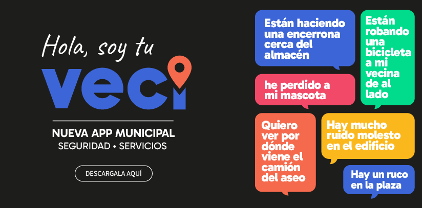
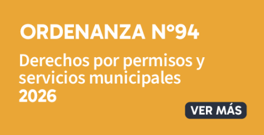

Canales Digitales





Ingresa para consultar o solicitar tu tarjeta digital y acceder a beneficios.
Descuentos directos en cilindros Abastible y beneficios en Gasco y Lipigas vía AMUCH.
Más de 37 beneficios en salud, gastronomía, librerías, cultura y mascotas.
Rebajas por litro en gasolina y parafina durante los días lunes y martes.
Pago de 3 a 12 cuotas sin interés pagando con tarjetas Lider Bci y Cencosud.

